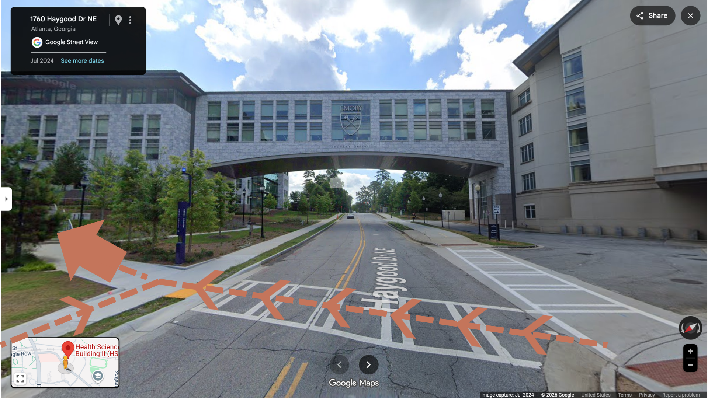
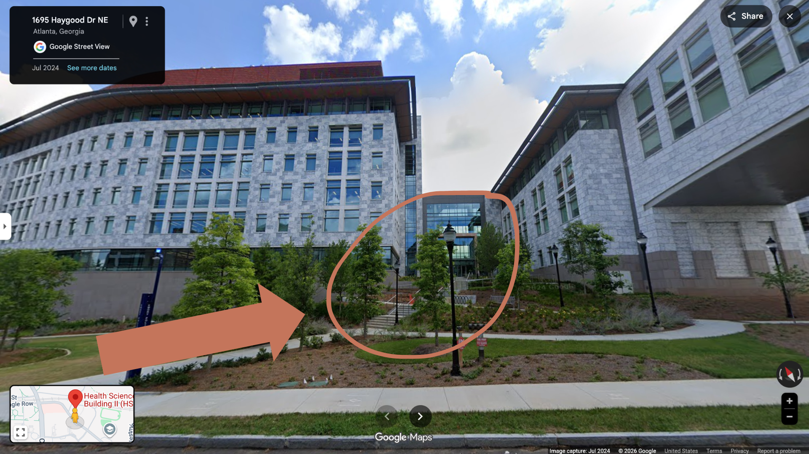

Everything you need to know about the day
How do we find our way around, and what changes as we get older? One of the earliest signs of aging-related cognitive decline is a shift in how people navigate their daily environments. Older adults tend to rely on memorized routes and body-based cues — such as “turn left at the stop sign” — rather than forming flexible, map-like mental representations of their environment. Understanding this shift could help identify early markers of cognitive decline, and that’s what this research is all about.
Yasmine will be presenting her work on understanding the aging navigational system, using virtual reality, neuroimaging, and other multimodal neuroscience techniques. She welcomes you to join her as she shares what she’s learned about how we find our way over time.
The defense will begin with the Director of Graduate Studies setting the agenda for the session, followed by an introduction from Yasmine’s advisor, Dr. Michael Borich. Yasmine will then present her dissertation research in a ~45 minute presentation, followed by questions from the audience. The full public session (presentation + Q&A) will last approximately one hour. All are welcome to attend.
After the Q&A (~1:00 PM), the audience will be asked to step out as the private defense commences between Yasmine and her committee. Afterwards, the committee will deliberate, and Yasmine will emerge once a decision has been reached.
HSRB-I Auditorium

HSRB-I entrance at the Brumley Bridge crosswalk
The defense will take place in the Health Sciences Research Building I (HSRB-I), located at 1760 Haygood Dr NE, in the Auditorium. The entrance for the auditorium is in between the two large HSRB buildings, near the Brumley Bridge, at the crosswalk (pictured to the left).
Take this path upwards and take the staircase or ramp (pictured to the right, circled) to arrive to the proper entrance. We will have friends outside with a sign to greet you and show you to the auditorium.
Please try to arrive a few minutes early, as the building doors require keycard access to be let in. There will only be someone to let you in until 12:05PM. If you arrive later than that, we will provide a number you can text to notify someone to let you in.

HSRB-I staircase / ramp to entrance
[Parking information — visitor decks, rates, closest deck to HSRB-I, payment methods, etc.]
[MARTA directions — nearest station, bus routes, shuttle info, walking time from station, etc.]
[Uber/Lyft drop-off location, recommended pin address, tips, etc.]
[Zoom link will be added closer to the date and shared via email.]
The defense begins at 12:00 PM Eastern Daylight Time (EDT / UTC-4).
[Any virtual etiquette notes — e.g., "Please keep your mic muted during the presentation. Questions will be opened up after the talk."]